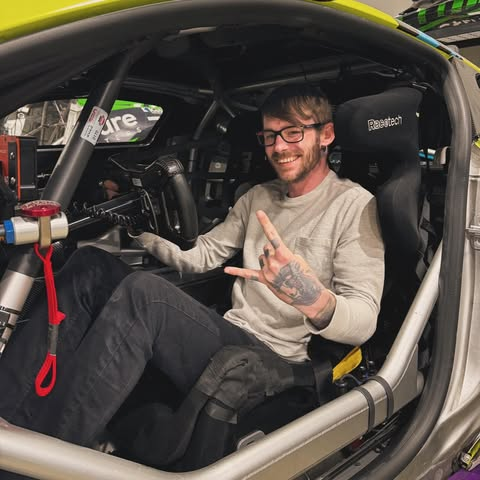

Evidence over theater
Sources, gaps, dates, and release state are visible. A dashboard is not allowed to imply more than the underlying record proves.
TeeJay Crawford works across dealership operations, inventory, visibility, reputation, reporting, workflow design, and custom software. The point is not more tools. It is fewer blind spots and better action.

TeeJay's work sits where dealership reality meets technology: messy feeds, expensive vendors, disconnected reports, public pages, shopper friction, manager follow-through, and software that needs to earn its place.
The engagement model is direct. TeeJay owns the diagnosis, approves the work, and remains accountable for what is presented to the client. Specialized agents can research and prepare; they do not impersonate him or take public action on their own.
Talk with TeeJaySources, gaps, dates, and release state are visible. A dashboard is not allowed to imply more than the underlying record proves.
Technology follows the operating question. There is no reason to build a platform where a disciplined process will do.
Customer, CRM, payment, production, DNS, and public actions stay behind an agreed approval gate.
The client receives the source map, operating logic, documentation, and verification method—not an unexplained black box.
If the evidence is not strong enough for a useful engagement, TeeJay will say so.
Book a fit check